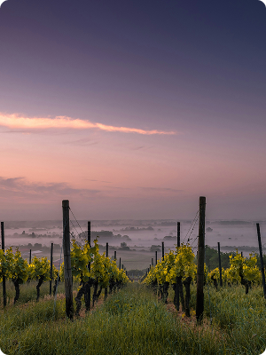
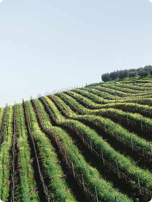
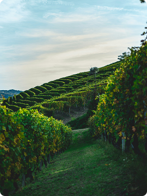
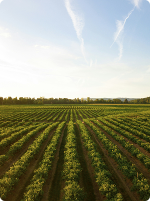
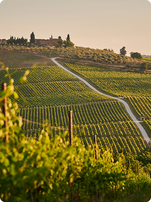

Domaine de la Romanée-Conti
Borgonha, França
Ícone absoluto do vinho mundial. Especializada em Pinot Noir, produz alguns dos vinhos mais raros e caros do planeta. Suas garrafas são cultuadas por colecionadores e enófilos como obras-primas engarrafadas.

Château Margaux - Premier Grand Cru Classé
Bordeaux, França
Elegância clássica em forma de vinho. Um dos cinco Premier Grand Cru Classé de 1855, conhecido pela finesse e longevidade de seus tintos baseados em Cabernet Sauvignon.

Sassicaia - Tenuta San Guido
Toscana, Itália
O vinho que redefiniu a Itália. Criou o conceito de “Super Toscano” ao misturar uvas francesas com terroir italiano. Hoje é símbolo de inovação e sofisticação.

Vega Sicilia Único
Ribera del Duero, Espanha
Produz vinhos complexos e longevos, especialmente o lendário Único, que passa mais de 10 anos envelhecendo antes de ser lançado.

Penfolds
South Australia, Austrália
Referência absoluta na Austrália, com o Grange considerado um dos vinhos mais icônicos do Hemisfério Sul. Potente, elegante e colecionável.